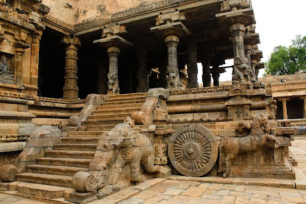
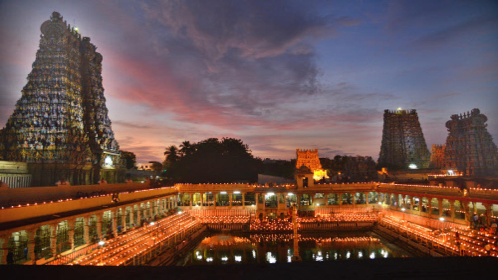
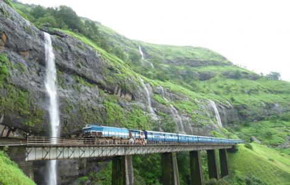
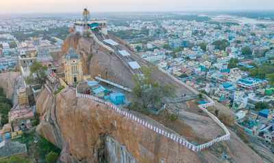
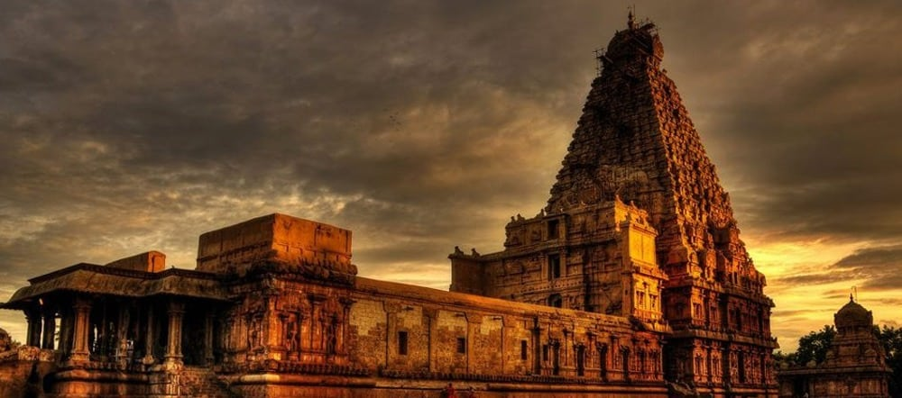

" Airavatesvara Temple is a Hindu temple of Dravidian architecture located in the town of Darasuram, near Kumbakonam, Thanjavur District in the South Indian state of Tamil Nadu. This temple, built by Rajaraja Chola II in the 12th century CE is a UNESCO World Heritage Site, along with the Brihadeeswara Temple at Thanjavur, the Gangaikondacholisvaram Temple at Gangaikonda Cholapuram that are referred to as the Great Living Chola Temples. The Airavatesvarar temple is one among a cluster of eighteen medieval era large Hindu temples in the Kumbakonam area, Thanjavur District. The temple is dedicated to Shiva. It also reverentially displays Vaishnavism and Shaktism traditions of Hinduism, along with the legends associated with Nayanmars – the Bhakti movement saints of Shaivism. The stone temple incorporates a chariot structure, and includes major Vedic and Puranic deities such as Indra, Agni, Varuna, Vayu, Brahma, Surya, Vishnu, Saptamtrikas, Durga, Saraswati, Sri devi (Lakshmi), Ganga, Yamuna, Subrahmanya, Ganesha, Kama, Rati and others.Shiva's consort has a dedicated shrine called the Periya Nayaki Amman temple. This is a detached temple situated to the north of the Airavateshvarar temple. This might have been a part of the main temple when the outer courts were complete. At present, parts of the temple such as the gopuram is in ruins, and the main temple and associated shrines stand alone. It has two sun dials namely morning and evening sun dials which can be seen as wheels of the chariot. The temple continues to attract large gatherings of Hindu pilgrims every year during Magha, while some of the images such as those of Durga and Shiva are part of special pujas. The temple was built by king Rajaraja Chola II. He ruled the Chola Empire between © 1146 and 1172 CE copyright. "

" Arulmigu Meenakshi Sundareshwarar Temple is a historic Hindu temple located on the southern bank of the Vaigai River in the temple city of Madurai, Tamil Nadu, India. It is dedicated to the goddess Meenakshi, a form of Parvati, and her consort, Sundareshwar, a form of Shiva.[6][7] The temple is at the center of the ancient temple city of Madurai mentioned in the Tamil Sangam literature, with the goddess temple mentioned in 6th-century-CE texts. This temple is one of the Paadal Petra Sthalam. The Paadal Petra sthalam are 275 temples of lord Shiva that are revered in the verses of Tamil Saiva Nayanars of © 6th-9th century CE. Madurai Meenakshi Sundareswarar temple was built by King Kulasekara Pandya (1190-1216 CE). He built the main Portions of the three-storeyed gopura at the entrance of Sundareswarar Shrine and the central portion of the Goddess Meenakshi Shrine are some of the earliest surviving parts of the temple. The traditional texts call him a poet-saint king, additionally credit him with a poem called Ambikai Malai, as well as shrines (koil) each for Natarajar and Surya near the main temple, Ayyanar in the east, Vinayagar in the south, Kariamalperumal in the west and Kali in the north. He also built a Mahamandapam. Kulasekara Pandya was also a poet and he composed a poem on Meenakshi named Ambikai Malai.Maravarman Sundara Pandyan I built a gopura in 1231, then called Avanivendaraman, later rebuilt, expanded and named as Sundara Pandya Thirukkopuram. Chitra gopuram (W), also known as Muttalakkum Vayil, was built by Maravarman Sundara Pandyan II (1238-1251). This gopuram is named after the frescoes and reliefs that depict secular and religious themes of Hindu culture. Maravarman Sundara Pandyan II also added a pillared corridor to the Sundareswara shrine and the Sundara Pandyan Mandapam. It was rebuilt after the 14th-century damage, its granite structure was renovated by Kumara Krishnappar after 1595. Though the temple has historic roots, most of the present campus structure was rebuilt after the 14th century CE, further repaired, renovated and expanded in the 17th century by Tirumala Nayaka. In the early 14th century, the armies of Delhi Sultanate led by Muslim Commander Malik Kafur plundered the temple, looted it of its valuables and destroyed the Madurai temple town along with many other temple towns of South India. The contemporary temple is the result of rebuilding efforts started by the Vijayanagara Empire rulers who rebuilt the core and reopened the temple.In the 16th century, the temple complex was further expanded and fortified by the Nayak ruler Vishwanatha Nayakar and later others. The restored complex now houses 14 gopurams (gateway towers), ranging from 45–50m in height, with the southern gopura tallest at 51.9 metres (170 ft). The complex has numerous sculpted pillared halls such as Ayirakkal (1000-pillared hall), Kilikoondu-mandapam, Golu-mandapam and Pudu-mandapam. Its shrines are dedicated to Hindu deities and Shaivism scholars, with the vimanas above the garbhagrihas (sanctums) of Meenakshi and Sundaresvara gilded with gold. "

" Tourism Coimbatore District is very much known for its tourist attractions. There are number of places to visit in and around Coimbatore. Coimbatore district is one of the biggest districts in Tamil Nadu with lot of tourist attractions, shopping centres as well as religious places. Some of the major attractions of Coimbatore District are Aliyar Dam, Monkey Falls, Siruvani Dam, Cholayar Dam, Botanical Garden, Horticulture Farms and Vaitheki Falls. All these places are worth visiting. Coimbatore serves as an entry and exit point to neighbouring Kerala State and the ever-popular hill station of Udhagamandalam (Ooty). It is the landing point for those who want to take the Mountain train that runs from Mettupalayam, just 35 kms from Coimbatore. The Coimbatore region is in the middle of the "Roman trail" that extended from Muziris to Arikamedu. At the end of the Sangam period, the region became a part of the Western Ganga kingdom. The Medieval Cholas conquered the region in the ©9th century CE. They constructed a highway called "Rajakesari Peruvazhi". "

" Ucchi Pillayar Temple is a 7th-century Hindu temple, one dedicated to Lord Ganesha located a top of Rockfort, Trichy, Tamil Nadu, India. According to legend, this rock is the place where Lord Ganesha ran from King Vibishana, after establishing the Ranganathaswamy deity in Srirangam. Tiruchirapalli Rock Fort is also fondly called as Malaikottai in Tamil. Vibhishana, was the younger brother of the Asura King Ravana who ruled Lanka. Lord Rama in the epic of Ramayana rescues his wife Sita, who was kidnapped and held by Ravana, with the help of Sugriva and Hanuman defeated him. In this war, the moral and truth-abiding brother of Ravana, Vibishana aids Rama in his battle against his brother. Ultimately Rama wins the war and as a token of love, he gives Vibishana a vigraham (idol for worship) of Lord Ranganatha, a form of Vishnu. Vibhishana, though he supported Rama, was basically an Asura, hence the Devas (who are arch rivals to Asuras as per Hindu mythology) wanted to stop this idea of an Asura taking Lord's supreme form to his Kingdom. They request the help of the Remover of obstacles and God of learning, Lord Vinayaka and the Lord accepts the plan. Vibhishana, while on his back to his Kingdom, goes through Trichi, and wanted to take his bath in the river Kaveri and do his daily rituals. However, he is perplexed as the deity, once kept in land, can never be removed and has to be in that place forever. As a solution, Vibishana tries to find someone to hold the deity while he was taking bath. He finds the Lord Vinayaka under disguise of a cowherd boy. As per the plan, when Vibishana is fully into water, Vinayaka takes the deity and keeps it firmly in sand, in the banks of kaveri. On seeing this, the angry Vibhishana chases the boy, to punish him, and boy keeps running and climbs over the rock near the Kaveri bank. Vibhishana finally reaches the boy and hits him on the fore-head. One can see a pit in the forehead of the idol even today.[2] The little boy then reveals himself to be Vinayaka. Vibishana immediately apologizes and the Lord gives him his blessings, reveals that the idol is destined to remain in Srirangam and sends him off to Lanka. This is similar in many regards to the story of Lord Ganesha in Gokarna with Ravana in the same Ramayana period. The place in which the Ranganathan deity was kept was later covered in deep forests, due to disuse and after a very long time, it was discovered when a Chola king chasing a parrot found the deity accidentally. He then established the Ranganathaswamy Temple, Srirangam as the largest temple complexes in the world. Meanwhile, the Pallavas built the Vinayaka temple and the Thayumanaswamy temple, in the rock which Vinayaka used to escape Vibishana. Uchi Pillayar is always associated with Manicka Vinayagar at the foothills. It is a general worship practise to pray obeisance with Manicak Vinayagar before visiting Uchi Pillayar."

&qout; Brihadishvara temple, also called Rajarajeswaram or Peruvudaiyār Kōvil, is a Hindu temple dedicated to Shiva located in South bank of Cauvery river in Tanjore, Tamil Nadu, India. It is one of the largest South Indian temples and an exemplary example of a fully realized Tamil architecture. It is called as Dakshina Meru (Meru of south).Built by Tamil king Raja Raja Chola I between 1003 and 1010 AD, the temple is a part of the UNESCO World Heritage Site known as the "Great Living Chola Temples", along with the Chola dynasty era Gangaikonda Cholapuram temple and Airavatesvara temple that are about 70 kilometres (43 mi) and 40 kilometres (25 mi) to its northeast respectively. The original monuments of this 11th-century temple were built around a moat. It included gopura, the main temple, its massive tower, inscriptions, frescoes, and sculptures predominantly related to Shaivism, but also of Vaishnavism and Shaktism traditions of Hinduism. The temple was damaged in its history and some artwork is now missing. Additional mandapam and monuments were added in the centuries that followed. The temple now stands amidst fortified walls that were added after the 16th century. Built out of granite, the vimana tower above the shrine is one of the tallest in South India. The temple has a massive colonnaded prakara (corridor) and one of the largest Shiva lingas in India. It is also famed for the quality of its sculpture, as well as being the location that commissioned the brass Nataraja – Shiva as the lord of dance, in 11th century. The complex includes shrines for Nandi, Parvati, Kartikeya, Ganesha, Sabhapati, Dakshinamurti, Chandeshvara, Varahi and others. The temple is one of the most visited tourist attractions in Tamil Nadu."